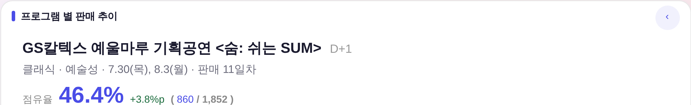
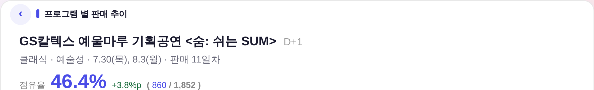
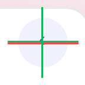
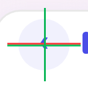
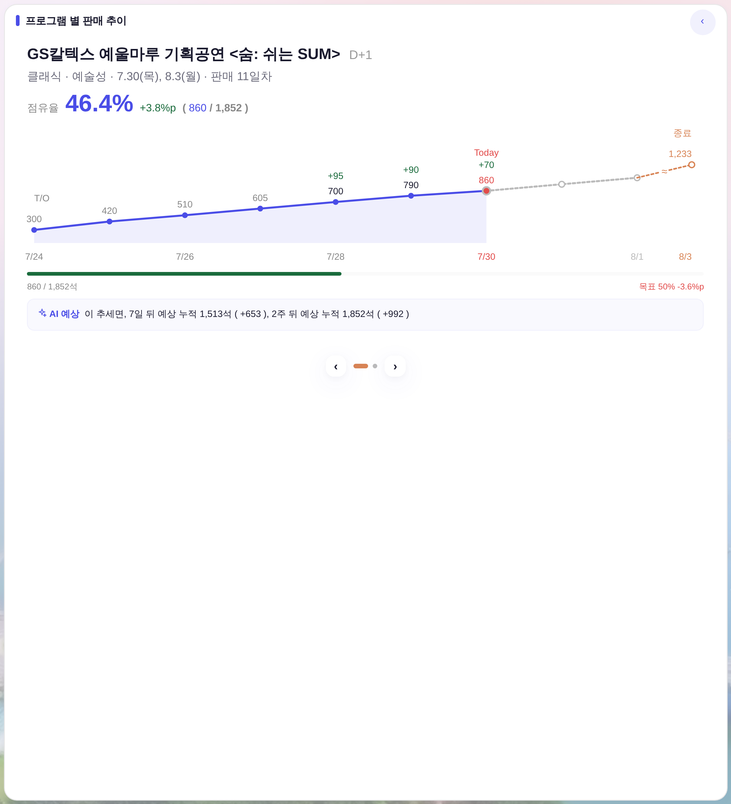

tools/smoke_rail_align.mjs와 같은 부팅 문법) · 빨강 십자선 = 원(컨테이너) 4분할 중심 · 초록 = 글리프 잉크 무게중심


| 항목 | 전 | 후 | 비고 |
|---|---|---|---|
| 원(.modal-x 정본) | 32×32 | 32×32 | 무변 — 배경·색·호버 전부 계승 |
| 글리프 font-size / weight | 13px / 400 | 18px / 700 | ‹ 형제 사다리 0.58×32 ≈ 18.6 → 짝수 스냅 18 · 700 = 같은 카드 하단 넘김자 .bizm-pgctl .nav |
| 실제 그려진 잉크 크기(DPR3 실측) | 2.90 × 4.51 | 4.00 × 6.33 | 가로 1.38× · 세로 1.40× (렌더 배율 0.875 화면 기준) |
「굉장히 작다」의 실체 = 원이 아니라 글리프였다 — 32px 원 안에 잉크가 2.9×4.5px만 찍히고 있었다(.modal-x의 13px는 ✕ 기준 값).


| 축 | 측정값(후) | 판정 |
|---|---|---|
| 광학 — 글리프 잉크중심 vs 원 4분할 중심 | dx 0.03 / dy 0.17 | PASS |
| 기하 — 버튼 중심 vs 제목줄(.ct 콘텐츠 박스) 중심 | 0.000 | PASS |
| 동급 정렬 — 글리프 잉크선 vs 제목 블릿 잉크선 | 0.16 | PASS |
| 동급 정렬 — 글리프 잉크선 vs 제목 글자 잉크선 | 0.23 | PASS |
| 버튼 아래끝 ↔ 프로그램명 줄 위끝(겹침 여부) | +11.0 (여유) | PASS |
잉크 dy 0.17 = DPR3 양자화 반스텝(1/3 device px) — 보정값을 -0.86 / -1.05로 흔들어 부호가 뒤집히는 구간을 찾아 그 중간 -0.95px로 고정했다.
‹ 는 좌우 비대칭이라 기하 중심에 그냥 두면 잉크가 0.95px 아래로 쏠린다 → span에 translateY(-0.95px) 역보정(260731 연간 캘린더 3종과 같은 문법).
| 상태 | 제목 들여쓰기 | 버튼 중심 Δ | 글리프 | 겹침 여유 |
|---|---|---|---|---|
| 목록(버튼 없음) | 14px (무변) | — | — | — |
| 상세 · 넓은 화면(zoom .875) | 54px | 0.000 | 18/700 | 11.0 |
| 상세 · 좁은 화면(zoom .75) | 54px | 0.000 | 18/700 | 9.5 |
| 상세 · biz-fit(패딩 압축) | 54px | 0.000 | 18/700 | 11.0 |
측정으로 잡은 결함 1건 — biz-fit에서 제목 들여쓰기가 안 먹었다(#app.biz-fit .bizm-card .ct{padding:…} 단축형이 우선순위로 이겨 제목이 버튼 위로 겹침). 같은 급 +1 선택자로 되받아 4종 전부 54px 확정.
.modal-x 정본) · 원 크기 32 · 배경/글자색/호버 · 카드 높이 · 목록 화면 · 동작(누르면 목록 복귀) · 하단 프로그램 넘김자check_design.py raw hex 1605/1605 무변 통과
※ 레포 상비 측정기 shared/measure_align.js는 로컬 http 서빙을 쓰는데, 이 원격 컨테이너는 Chromium의 루프백 접속이 프록시에 막혀 실행되지 않았다(환경 제약). 그래서 같은 판정 문법(DPR3 캡처 · 잉크 무게중심 · 십자선 증빙 · 판정선 0.5)을 레포 정본 스모크와 동일한 file:// 부팅으로 수행했다. 측정기 파일은 손대지 않았다.